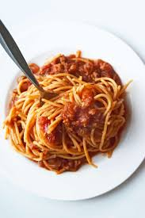

Spaghetti

Description
It all started when I was a wee lad growing up in a middle class household.
Sit back and relax while I tell you a long winded story about my connection
to this classic dish, and hide the "jump to recipe button" so you're forced
to read my horrible uninspiring story about some noodles and sauce.
Just kidding! This is a project i'm working on, i'll spare you. Lets get to it!
Ingredients
- Olive oil
- Angel hair spaghetti noodles
- Newman's Own "Sockarooni" pasta sauce
- One pound ground beef
- One half large onion, diced
- Minced garlic to taste
- Salt to taste
- Cracked pepper to taste
- Oregano to taste
Steps
- Bring salted water to a boil. Add a splash of olive oil to avoid pasta sticking.
add pasta once boiling and cook according to instructions on box
- Dice onions and garlic, and saute in olive oil until onion is translucent
- Add ground beef to pan and season with salt, pepper, and oregano. Saute until browned
- Once meat is browned, add pasta sauce and cook until heated through
- Drain pasta once finished, and serve with meat sauce
Home